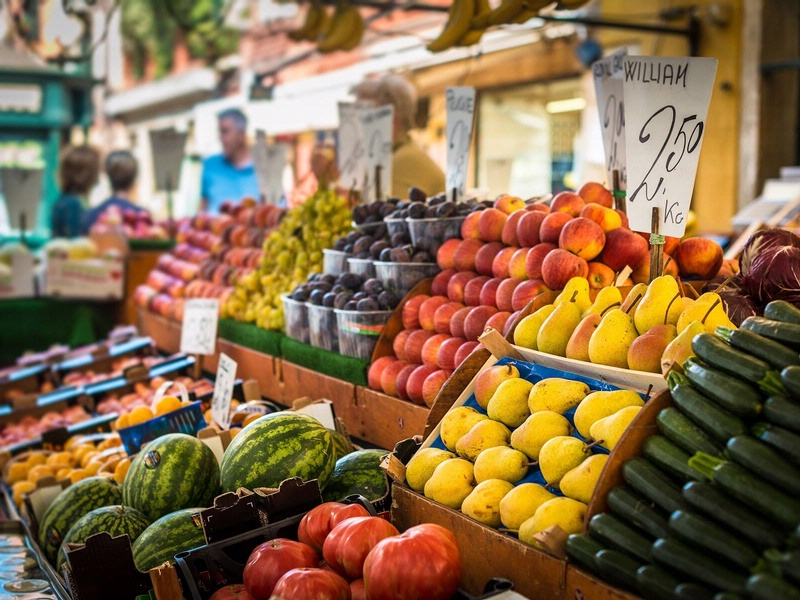

Sostenere le attività locali durante i viaggi è cruciale per diverse ragioni. Innanzitutto, contribuisce all'economia locale creando lavoro e sviluppo. Le piccole imprese spesso dipendono dal turismo e il supporto dei visitatori è fondamentale per la loro sostenibilità economica. Inoltre, questo sostegno preserva cultura e tradizioni, offrendo prodotti e servizi autentici e di alta qualità che rappresentano l'identità locale. Questo aiuta a conservare patrimoni culturali e a mantenere viva la diversità.
Il supporto alle realtà locali offre esperienze autentiche ai turisti, consentendo di scoprire cucina, artigianato e eventi culturali unici. Queste attività solitamente hanno un minor impatto ambientale e promuovono pratiche sostenibili, come l'uso di ingredienti locali e gestione responsabile delle risorse. In definitiva, sostenere le attività locali contribuisce al benessere economico e culturale delle comunità, offre autenticità ai viaggiatori e favorisce lo sviluppo turistico sostenibile.
Ecco come poter finanziare le realtà locali:
i piccoli venditori di frutta e verdura, soprattutto in località esotiche, sono realtà da incentivare ed assecondare poichè piccole perle nascoste che subiscono il fenomeno della globalizzazione in senso negativo.